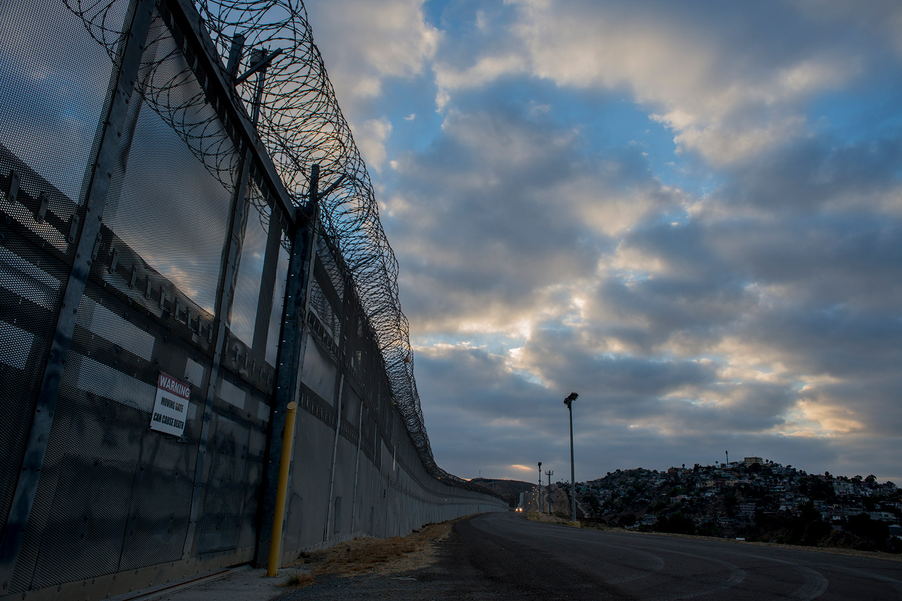

Many people believe that civil wars are caused by one country, but in reality other countries often provoke war to gain a profit. This is known as the military industrial complex and it played a huge role during the cold war. The cold war conflict between socialists and capitalists led waves of Central American refugees to seek asylum in the United States. For example, El Salvador had a civil war between socialist rebels and a capitalist government.

The United States; many see it as the land of opportunity, liberty, and happiness. However, with the rise of mass deportation and detention of asylum seekers at the U.S.-Mexico border, immigrants are now seen as miscreants by the current administration. President Trump has emphasized how important it is to keep American soil safe from terror or other harms, yet he does so with clear anti-immigrant rhetoric. Despite security being crucial, the executive branch of our country may not be open to explore the reasons for the increasing immigration, particularly from Latin American countries.
Recently in 2017, approximately 3 million Mexicans are living in the United States. But why is there a vast amount of Latin American immigrants? One of the cause was in 1992, president George H.W. Bush, the Mexican president, Carlos Salinas, and Canadian Prime Minister Brian Mulroney, agreed to sign the North American Free Trade Agreement or NAFTA.